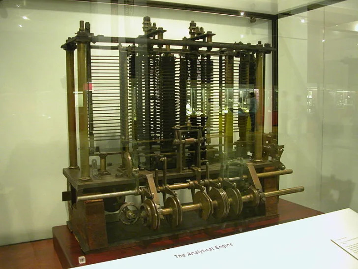

About Me
Hi! I'm Ada, Countess of Lovelace and am an English mathematician and writer, chiefly known for my work on Charles Babbage's proposed mechanical general-purpose computer, the Analytical Engine.
I am one of the first to recognize that machines have applications beyond pure calculation, and to have published the first algorithm intended to be carried out by such a machine.
In my free time I like to read about scientific developments, mathematics, and computational mathematics. I also like to take my chances of winning big.
Fun fact! I've been programing for 0 seconds!
Projects
The first computer program

The Analytics Engine
The Ada programming language